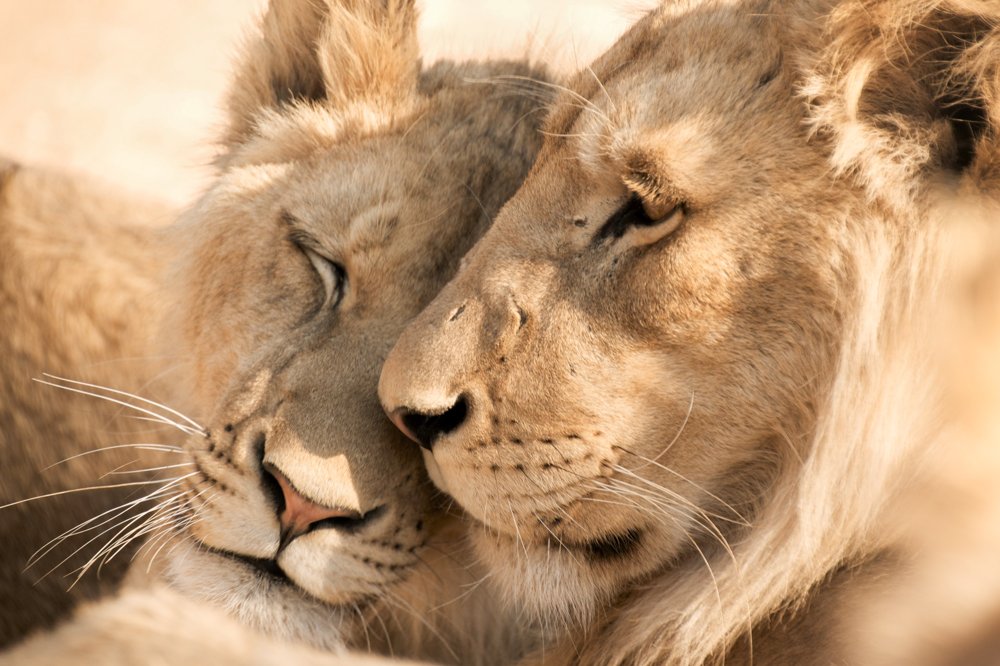
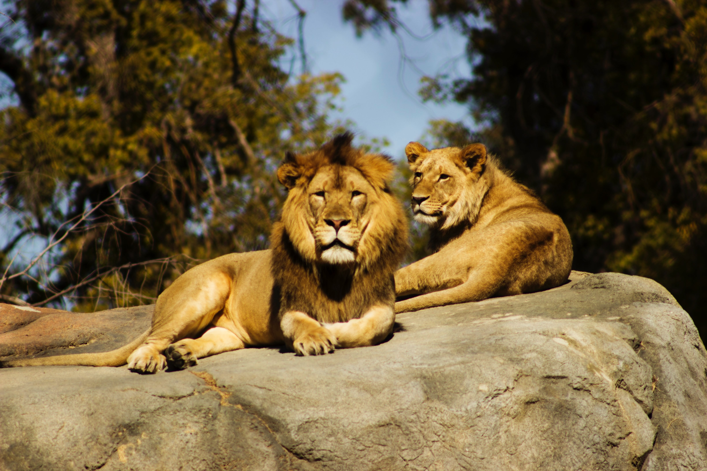
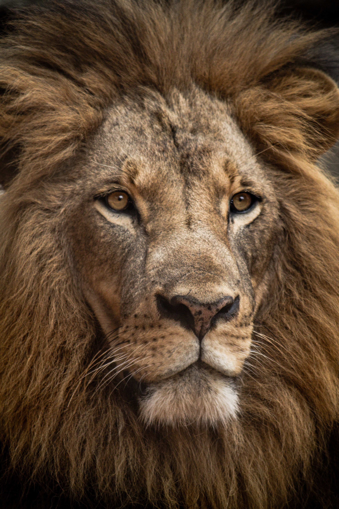
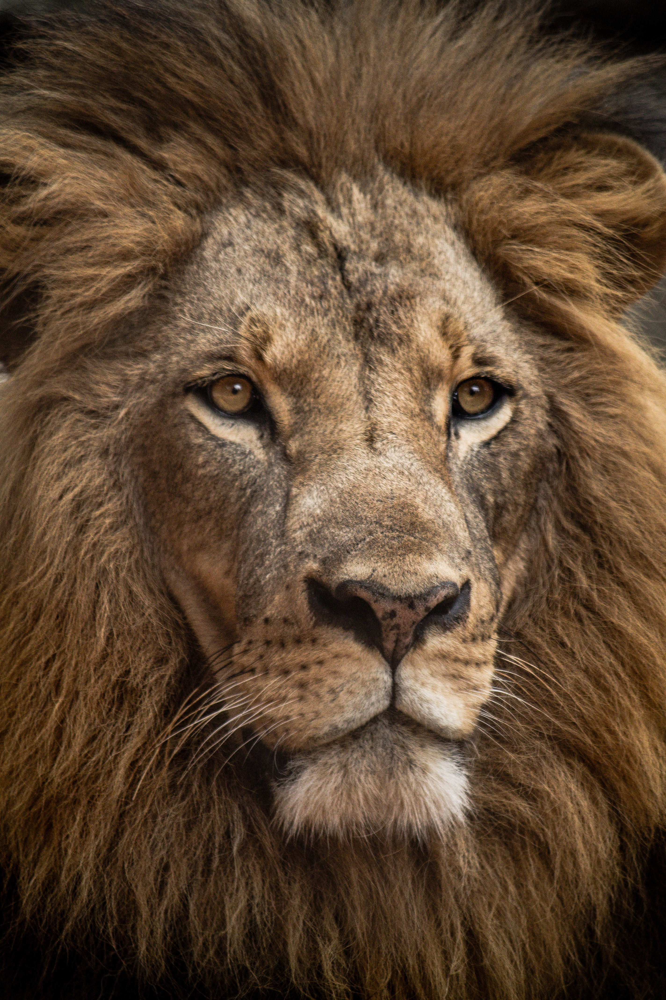
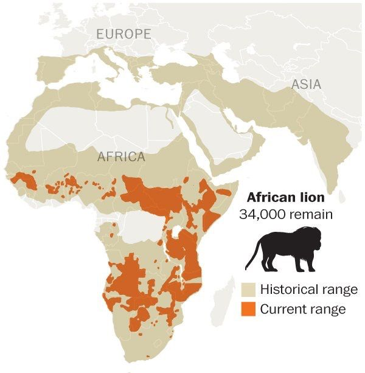

Introduction
The lion (Panthera Leo) is an enormous feline animal located predominately in Africa and India. It has a muscular, broad-chested body, short, rounded head, round ears, and a hairy tuft at the end of its tail. The lion is part of the Felidae family and one of the four types of "huge felines" (subfamily Pantherinae) in the Panthera sort, alongside the tiger (Tigris), the panther (pardus), and the panther (onca). The lion is the second-biggest living feline after the tiger, surpassing 250 kilograms (550 pounds). Lions are a social species that form groups called prides which consist of adult males, related females and cubs. Wild lions currently exist mainly in Sub-Saharan Africa, with a critically endangered remnant population in northwest India in Asia, having disappeared from North Africa, the Middle East, and Western Asia in historic times.
 Physical Characteristics
The lion is the tallest (at the shoulder) of the cats and furthermore is the second-heaviest cat after the tiger. With strong legs, a solid jaw, and 8 centimeter (3.1 inch) long canine teeth, the lion can cut down and kill huge prey. The skull of the lion is basically the same as that of the tiger, however the front facing locale is generally more discouraged and straightened, with a somewhat more limited postorbital district. The lion's skull has more extensive nasal openings than the tiger. Be that as it may, because of how much skull variety in the two species, typically just the construction of the lower jaw can be utilized as a dependable sign of species. The top column of stubbles structures an example that varies in each lion; this one-of-a-kind example, known as "hair spots," is utilized by scientists to distinguish explicit creatures in the field.

 

Habitat
In relatively recent times, the distribution of lions spanned the southern parts of Eurasia, ranging from Greece to India, and most of Africa except the central rainforest zone and the Sahara Desert. Lions inhabit a wide range of habitats, from open plains to thick brush and dry thorn forest. Except for a small population of the Indian lion subspecies that remains in the Gir Forest of northwest India, lions now live only in Africa, from the Sahara's southern fringe to northern South Africa.
Diet and hunting
Lions usually hunt at dusk and spend most of the day resting and sleeping. They have excellent eyesight and can see well in the dark. It is usually the lionesses who do the hunting. The lion takes little part in the hunt but he always eats his fill of the kill before the rest of the pride begin their meal - hence the expression 'the lion's share'. Lions prefer to hunt zebra and wildebeest; these animals are slower and easier to catch than gazelles and small antelopes. The actual hunt is an organised event, some lionesses lying in wait, downwind of the herd they have targeted. Another moves around the herd until she is upwind of it, then she suddenly breaks cover and chases the frightened herd straight towards the hidden lionesses. One animal from the herd, perhaps a slow or injured one, is singled out and killed by dragging it to the ground and biting its neck. When prey is scarce, lions eat almost anything, including fallen fruit and carrion (already dead animals).Below shows a video of how lions hunt prey by working together as a team in their prides.
More Facts about Lions
Here are some more intresting facts about lions.
Further information can be found by clicking 'More information' or clicking the image below:
More information